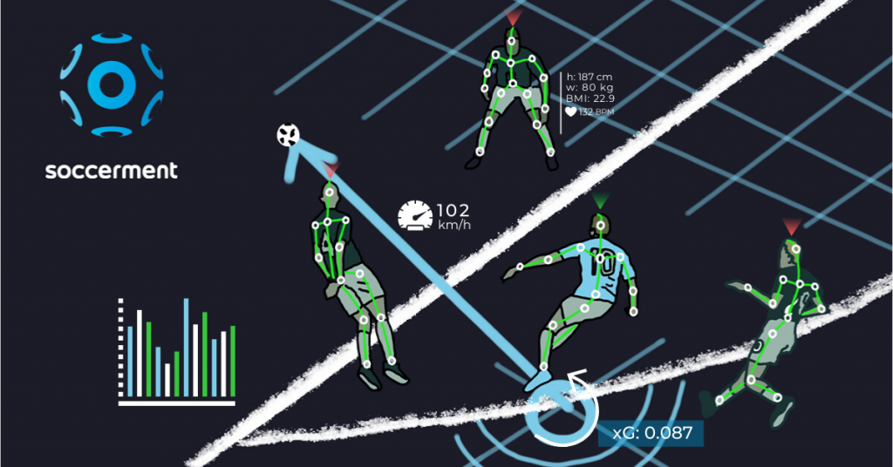

Data science has become an incredibly useful tool that I apply to my favorite activities: soccer, e-sports, and fitness. I am passionate about discovering insights through data analysis and seeing how it can help me improve. In soccer, I track various performance metrics, such as shooting accuracy, passing efficiency, and stamina levels. By reviewing these statistics, I can identify areas where I need improvement and better understand my own strengths and weaknesses. Over time, I hope to use data to predict game outcomes and develop training routines based on historical performance data.
In e-sports, data science helps me dive deeply into the competitive world by analyzing in-game statistics to uncover optimal strategies. For example, I look at metrics like reaction time, decision-making speed, and win rates against different types of opponents. Understanding these elements helps me adapt and refine my gameplay, making me a more versatile player. Lastly, in fitness, data science is my go-to method for tracking progress. By visualizing my personal records, workout frequency, and progress over time, I can set realistic goals and make data-driven adjustments to my training routine. Using data science allows me to explore new perspectives in each of these areas, helping me achieve continuous improvement and stay motivated.
